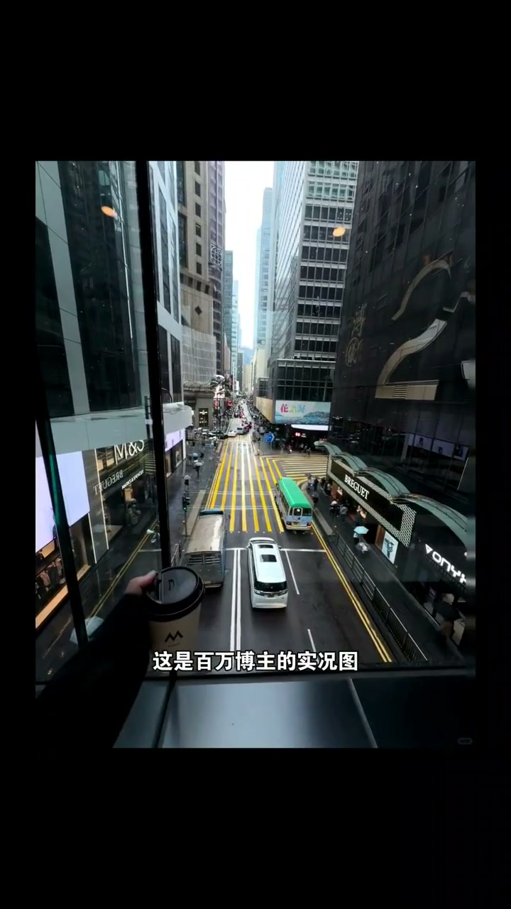
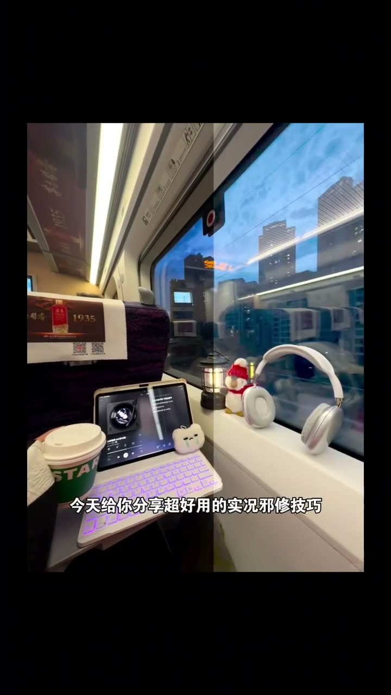
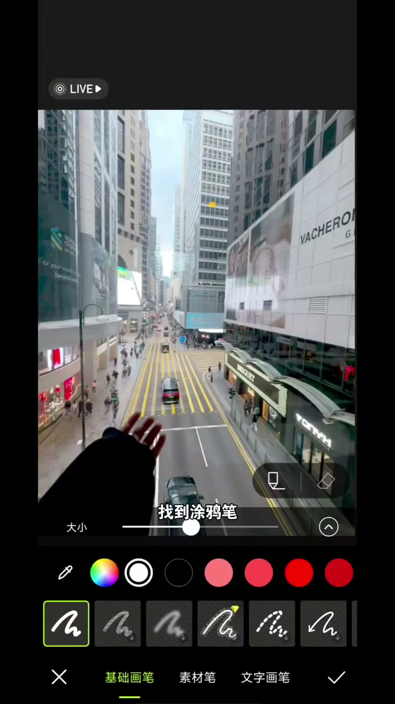
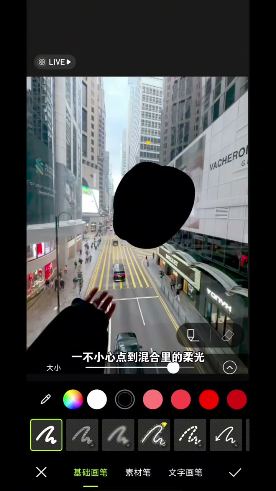
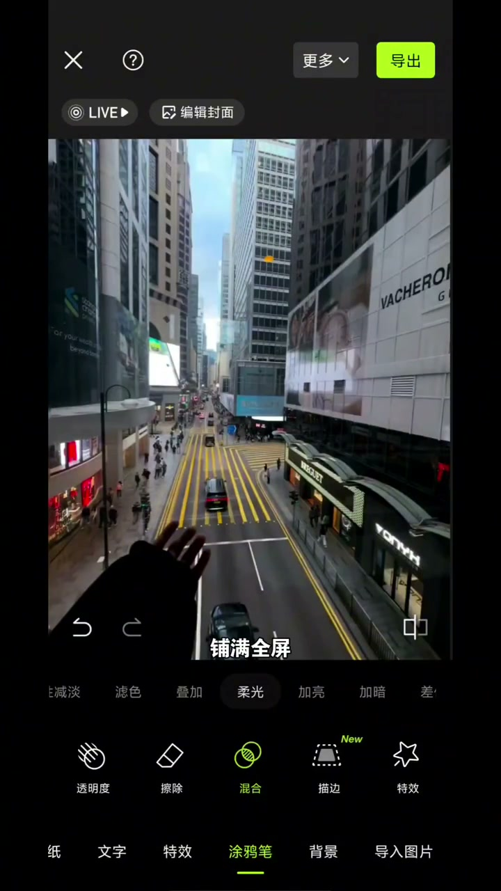

对比：你的实况图 vs 博主的实况图
00:00这是你的实况图，这是百万博主的实况图——为什么你的怎么拍都普通，而人家的清晰且有质感？
00:06今天分享一个超好用的实况图修图技巧。

涂鸦笔+黑色圆球
00:09首先导入实况图，找到涂鸦笔，选黑色，大小拉到82。
00:12然后随手画个圆球。


柔光混合：氛围感上来
00:16一不小心点到混合里的“柔光”——你看，画面氛围感立刻上来了。黑色+柔光把雾蒙蒙压下去，色彩变得通透有质感。

放大铺满全屏：调色密码
00:18聪明的你再把圆球放大，铺满全屏。
00:21恭喜你，一不小心掌握了实况调色密码——全屏统一柔光，照片清晰有质感又氛围感十足。

实况图雾蒙蒙不用换相机——黑色涂鸦+柔光混合+铺满全屏，三步掌握调色密码。